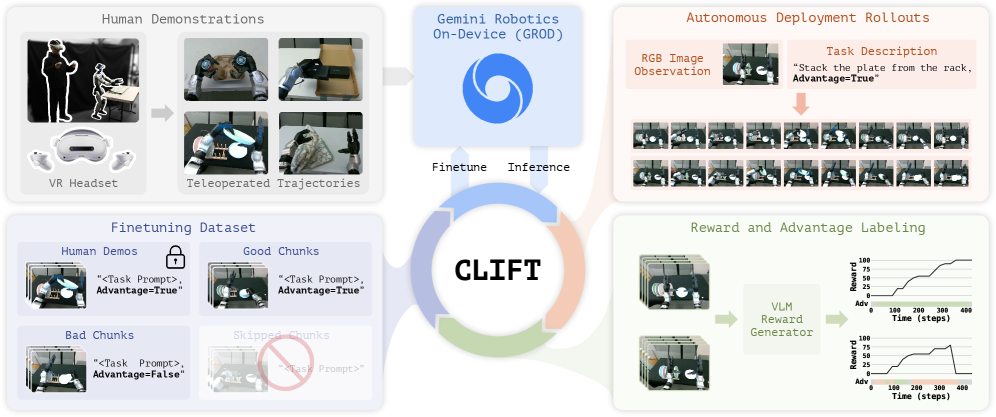
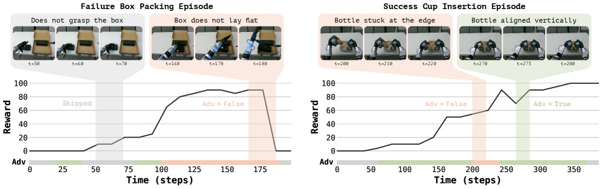

제출: 2026년 7월 31일 · 로봇 Unitree G1 휴머노이드 · 기반 모델 Gemini Robotics On-Device (API만 접근)
한 줄 요약 (TL;DR)
구글의 Gemini Robotics On-Device처럼 성능은 좋지만 내부를 열어볼 수 없는 로봇 모델이 늘고 있다. 제공되는 것은 "데이터를 올리면 학습시켜 준다"는 창구 하나뿐 — 가중치도, 기울기도, 손실값도 못 본다. 그래서 강화학습을 붙일 수가 없다. 이 논문은 그 제약 안에서 성능을 끌어올리는 법을 찾는다. 핵심은 강화학습의 신호를 "지도학습 데이터"로 위장하는 것 — 로봇을 굴려 나온 기록을 잘한 구간/못한 구간으로 채점한 뒤, "이건 잘한 것"이라는 꼬리표를 지시문에 붙여 그냥 학습 데이터로 올린다. 이걸 두 번만 반복하니 어려운 양팔 협응 작업이 53%→96%, 컵 끼우기가 70%→98%가 됐다. 같은 방법을 열려 있는 모델(π0.5)에 써도 30%에 그쳐, 기반 모델의 사전학습 품질 차이가 그대로 드러났다.
1배경 · 문제의식
요즘 강력한 로봇 기반 모델 중 상당수는 닫힌 가중치(closed-weight)다. 사용자는 관리형 미세조정 창구(managed SFT API — 데이터를 올리면 회사 쪽에서 학습시켜 모델을 돌려주는 서비스)만 쓸 수 있다. 이때 막히는 것들이 있다.
가중치를 못 본다 → 모델 구조를 고칠 수 없다.
기울기(gradient)를 못 본다 → 원하는 방향으로 직접 밀 수 없다.
확률값·손실값을 못 본다 → 강화학습의 표준 도구가 전부 무력화된다. 강화학습은 "이 행동을 할 확률을 높여라/낮춰라"를 계산해야 하는데, 그 확률 자체를 볼 수 없기 때문.
이 문제는 휴머노이드에서 특히 아프다. 예측한 대로 몸이 안 움직이기 때문이다 — 처음 보는 상태, 제어기 특성, 통신 지연, 고유한 실패 방식이 겹치면서 모델이 생각한 동작과 실제로 일어난 일의 간극이 벌어진다. 시연 데이터로 한 번 학습시키는 것(SFT)만으로는 이 간극을 메울 수 없다. 실제로 굴려보고 그 결과를 되먹여야 한다.
이 논문의 발상: 창구가 지도학습밖에 안 받아준다면, 강화학습에서 하고 싶은 말을 지도학습 데이터의 형태로 바꿔 넣자. "이 행동의 가치가 높다"를 기울기로 전달하는 대신, 지시문에 "잘한 것" 꼬리표를 달아 평범한 학습 예제처럼 올린다. 모델은 그저 "꼬리표가 이럴 땐 이런 행동"을 배우고, 실행할 때 "잘한 것"을 달라고 요청하면 된다.
2핵심 Contribution
내부를 안 열고도 되는 폐루프 개선법 — 가중치·기울기·확률·손실 어느 것도 없이 정책을 반복 개선한다. 닫힌 모델을 쓰는 현실적 제약에서 출발한 첫 체계적 해법.
사람 라벨 100개로 만든 채점기 — 사람이 "어느 쪽이 더 잘했나"를 100번만 골라주면, 그 취향에 맞는 자동 채점기를 만들어 이후 무한히 재사용한다.
실패한 시도에서도 건질 것을 건진다 — 통째로 버리는 대신 구간 단위로 채점해, 실패한 회차 안의 잘한 구간을 양(+) 예제로 재활용한다. 이 차이가 가장 어려운 과제에서 96% vs 84%로 벌어졌다.
3Method — 3단계 순환
1단계: 사람 취향에 맞춘 채점기 만들기
먼저 매 순간에 점수를 매겨 줄 채점기가 필요하다. 그런데 "좋은 점수 기준"을 사람이 손으로 설계하기는 어렵다. 그래서:
영상·언어 모델에게 매 스텝 점수를 매기게 하되, 온도 샘플링(같은 질문에 매번 조금씩 다른 답이 나오게 하는 설정)으로 여러 버전의 채점 기준을 뽑는다.
사람에게는 "이 둘 중 어느 쪽이 더 잘했나"만 100번 물어본다. 점수를 직접 매기게 하는 것보다 훨씬 쉽고 일관적이다.
여러 채점 기준 중 사람의 선택과 가장 잘 맞는 것을 고른다. 이를 하나의 재사용 가능한 채점기로 정리한다.
2단계: 어느 구간이 잘한 구간인지 가려내기
점수가 높다고 곧 "잘했다"는 아니다. 쉬운 상황이라 원래 점수가 높은 것일 수도 있기 때문이다. 그래서 비슷한 상황끼리 모아 비교한다.
각 행동 구간(action chunk — 한 번에 내놓는 몇 초 분량의 움직임 묶음)에 대해, 전체 기록에서 화면이 비슷한 시작 상태들을 찾아온다(DINOv3 임베딩으로 유사도 계산).
그 또래 집단과 비교해, 이후 18초 동안 쌓인 점수로 순위를 매긴다.
상위 30% 안에 들면 "잘함(positive)", 아니면 "못함(negative)" — 딱 두 값의 꼬리표만 붙인다.
왜 또래와 비교하나: 시험 점수 80점이 잘한 건지는 같은 시험을 본 사람들과 비교해야 안다. 마찬가지로 어떤 행동이 좋았는지는 비슷한 상황에 놓였던 다른 시도들과 견줘야 판단할 수 있다. 강화학습에서 말하는 어드밴티지(평균 대비 얼마나 나은가)를, 확률값 없이 검색과 순위만으로 흉내 낸 것이다.
3단계: 순환 돌리기 (flywheel)
① 굴린다
현재 정책으로 로봇을 실제 배포·실행
② 채점한다
1단계 채점기로 기록에 점수 부여
③ 꼬리표를 단다
2단계 방식으로 구간마다 "잘함/못함" 부여. 사람 시연은 항상 "잘함"
④ 다시 올린다
누적 데이터 전체를 미세조정 창구에 제출 → 새 정책 수령 → ①로
실행할 때는 지시문에 "잘함"을 달아 요청한다. 모델은 학습에서 본 대로 "잘함일 때의 행동"을 내놓는다.
4실험 결과
실험 구성
로봇
Unitree G1 휴머노이드 — 손가락 달린 손, 머리에 카메라 2대
과제 3종
상자 담기(한 물체 집어 넣기) · 컵 끼우기(양손이 서로 다른 일을 하는 비대칭 협응) · 접시 건네받기(한 손에서 다른 손으로 옮기며 계속 접촉 유지)
비교 대상
Gemini Robotics On-Device(닫힌 모델, API만) vs π0.5(열린 모델). 과제당 시연 2시간씩 동일하게 학습
데이터 수집
VR 헤드셋으로 전신 원격조종
순환을 돌릴수록 오른다 (성공률)
과제
시연만 학습(시작점)
1회전 후
2회전 후
상자 담기
93%
99%
100%
컵 끼우기
70%
84%
98%
접시 건네받기 (양팔)
53%
73%
96%
어려운 과제일수록 이득이 크다. 가장 어려운 접시 건네받기가 53%→96%로, 두 번의 순환만에 실용 가능한 수준이 됐다.
기반 모델이 다르면 결과도 다르다 (2회전 후)
과제
Gemini Robotics On-Device
π0.5 (열린 모델)
상자 담기
100%
76%
컵 끼우기
98%
56%
접시 건네받기
96%
30%
중요한 해석: π0.5는 열린 모델이라 내부에 직접 손댈 수 있는데도 뒤처졌다. 실제로 내부를 건드리는 방식(FiLM 조건화)까지 동원해도 어려운 과제에서 40~48%에 그쳐, Gemini 쪽 84~93%에 못 미쳤다. 즉 격차의 원인은 "API만 쓸 수 있다"는 제약이 아니라 기반 모델 자체의 사전학습 품질이다. 접근 제약은 CLIFT로 우회할 수 있지만, 기반 모델의 밑천은 우회할 수 없다.
5Ablation
구간 단위 채점 vs 회차 통째로 버리기 (2회전, 접시 건네받기): 구간 단위가 96%, 실패한 회차를 통째로 버리는 방식이 84%. 나머지 두 과제는 차이가 거의 없었다(100% vs 100%, 98% vs 97%). 즉 어려운 과제일수록 실패 기록 속 잘한 구간을 건지는 것이 결정적이다. 완전히 실패한 시도에도 초반의 훌륭한 접근 동작은 들어 있기 때문.
새로 나타난 행동: 마지막 회전쯤 되면 시키지 않은 행동이 나온다 — 집기 전에 물체를 돌려 자세를 고쳐 잡거나, 실패하면 다시 시도하는 동작. 채점기가 "결국 성공하는 쪽"에 점수를 줬기 때문에 자연히 학습된 것으로 보인다.
6핵심 Figure / Table

Figure 1 — CLIFT 순환 구조. (좌상) VR 원격조종으로 모은 사람 시연 → (중앙) Gemini Robotics On-Device에 미세조정 창구로 제출 → (우상) 로봇이 자율 실행, 지시문에 "Advantage=True"를 달아 요청 → (우하) 영상·언어 채점기가 기록에 점수를 매기고 구간별 어드밴티지 산출 → (좌하) 학습 데이터 구성: 사람 시연과 잘한 구간은 "True", 못한 구간은 "False", 애매한 구간은 제외 → 다시 창구로. (출처: arXiv:2607.29172)

Figure 2 — 실제 실행 기록의 점수와 구간 꼬리표. 성공한 회차에도 못한 구간이, 실패한 회차에도 잘한 구간이 섞여 있음을 보여준다. 회차 전체를 성공/실패로만 나누면 이 정보가 통째로 버려진다 — 구간 단위 채점이 필요한 이유를 뒷받침하는 그림. (출처: arXiv:2607.29172)